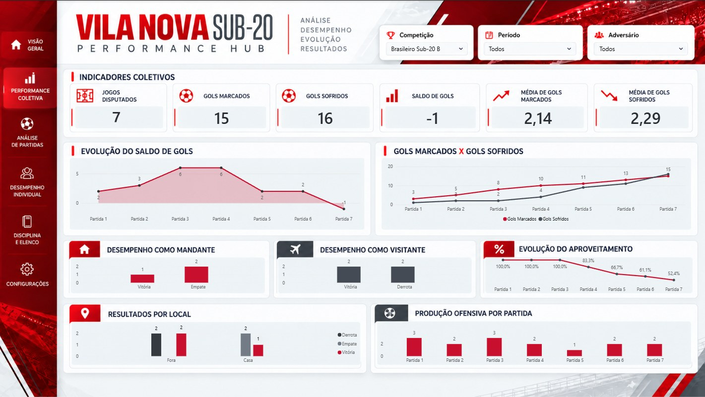
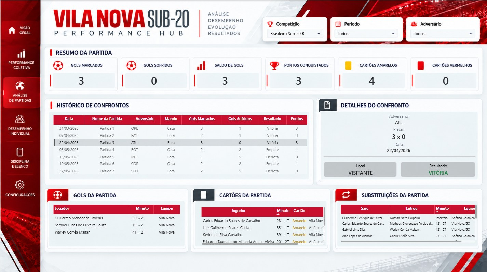
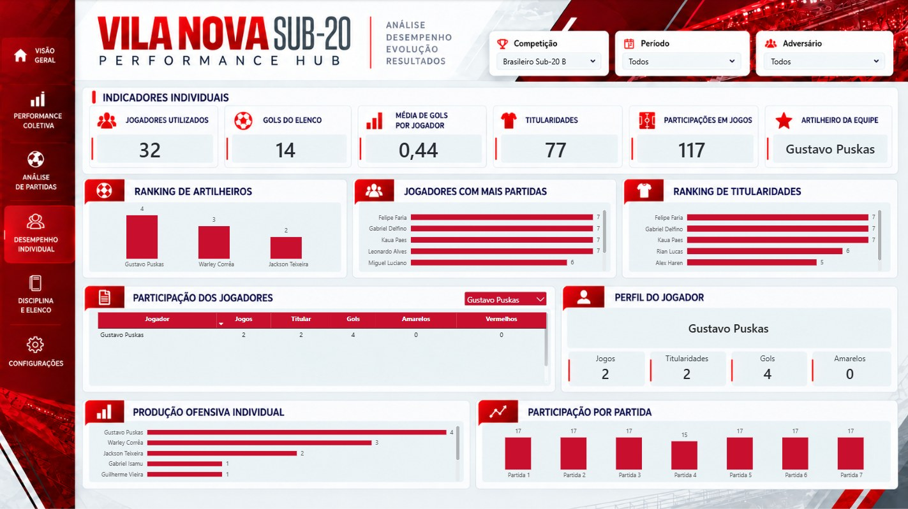
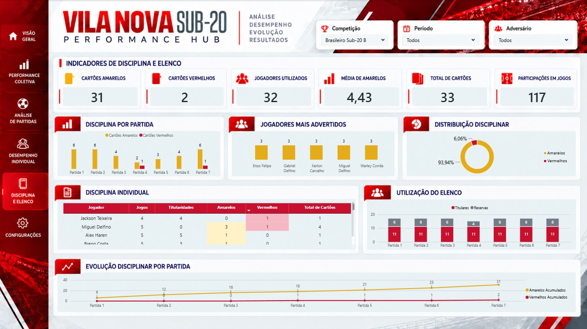

Objetivo da análise
Acompanhar os resultados do Vila Nova Sub-20 e analisar a participação dos atletas, a produção ofensiva e os indicadores disciplinares ao longo das partidas disponíveis.
Projeto de análise de desempenho do Vila Nova Sub-20 no Brasileiro Sub-20 B de 2026. A partir de documentos oficiais da CBF, os dados foram coletados, tratados e organizados com Python para alimentar um painel de cinco páginas no Power BI, com indicadores coletivos, individuais e disciplinares.
Coleta de dados oficiais, organização das informações e exploração do desempenho da equipe.
Acompanhar os resultados do Vila Nova Sub-20 e analisar a participação dos atletas, a produção ofensiva e os indicadores disciplinares ao longo das partidas disponíveis.
Extração em Python de dados de partidas e súmulas oficiais da CBF, com limpeza, padronização e validação de atletas, gols, cartões e substituições.
Estruturação das tabelas para análise no Power BI, construção de indicadores e medidas DAX, além de cinco páginas com navegação e filtros por competição, período e adversário.
Resultados por partida e local, evolução de gols e aproveitamento, ranking de atletas, participação no elenco e distribuição de cartões por jogo.




